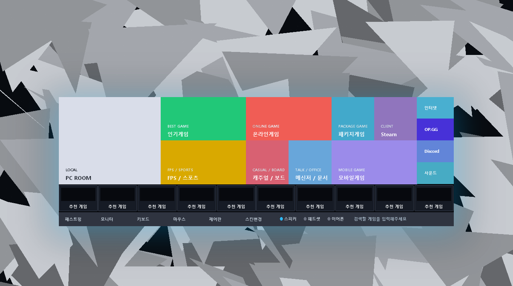

Local Windows Launcher
Korean-style PC Room Launcher
개인 PC에서 PC방 감성의 로그인 화면, 잔여시간 위젯, 카테고리 런처를 로컬로 사용하는 Windows 런처입니다.
Preview
런처와 로그인 화면
아래 이미지는 공개 배포용 안전 초안 화면입니다. 기존 업체 UI나 광고 이미지를 직접 사용하지 않고, 자체 제작한 로컬 런처 화면만 보여줍니다.

Category system
앱 추가는 폴더에 넣는 방식
설치 후 다운로드 폴더에 Codex PCBang Launcher Categories 폴더가 생성됩니다. 원하는 카테고리 폴더에 바로가기, 실행 파일, URL, 폴더를 넣으면 런처에 표시됩니다.
자동 감시 프로그램 없이 사용자가 직접 넣고 빼는 구조입니다.
PDF 매뉴얼 받기Uninstall
삭제 방법
- Windows 제어판을 열고 오른쪽 위 검색창에 프로그램 제거를 입력합니다.
- 프로그램 제거 또는 변경 화면에서 Korean-style PC Room Launcher를 찾아 선택합니다.
- 상단의 제거/변경을 누르고 안내에 따라 삭제합니다. 더 정확한 방법은 PDF 매뉴얼 파일에서 확인하세요.
주의: Windows 안전 모드에서 Malware Zero 같은 정리 도구를 실행하면 이 런처 파일도 함께 삭제될 수 있습니다. 필요하면 설치 관리자 또는 ZIP으로 다시 복구하세요.
Windows 64비트 버전은 정상 작동을 기준으로 배포하지만, 32비트와 ARM64 버전은 아직 저희 측에서 확인을 완료하지 않았습니다.
이 런처의 설치, 사용, 삭제, 호환성 문제에 대한 최종 책임은 사용자에게 있습니다. 지속적인 업데이트는 보장되지 않으며, Windows 64비트 1920x1080 환경에서만 실험을 진행했기 때문에 모든 PC 환경의 호환성을 보장할 수 없습니다.
다만 설치판 소스는 GitHub Release에 오픈소스로 공개될 예정이므로, 비공식 업데이트나 커뮤니티 패치가 이어질 가능성은 높습니다. 개인 사용판 소스는 저작권 위험 때문에 공개 대상에서 제외합니다.
Download
다운로드
HTML과 downloads 폴더를 같은 위치에 올리면 아래 링크가 바로 다운로드로 동작합니다. PF는 런처판, LB는 로그인 화면이 포함된 통합판이며 뒤 숫자는 업데이트 갱신 시간 코드입니다.
이 런처는 아직 대부분 앱과 호환이 안됩니다.
| 구분 | 대상 | 다운로드 | 용량 | 비고 |
|---|---|---|---|---|
| USB 전용 이동식 | Windows x64 | 준비 중 | - | 별도 이동식 패키지는 이후 제공 예정 |
| LB 통합판 설치 관리자 | Windows 64비트 | EXE 바로 받기 | 90.2 MB | 구버전 감지 시 실행 중인 런처를 닫고 덮어쓰기 설치 |
| PF 런처판 설치 관리자 | Windows 64비트 | EXE 바로 받기 | 90.2 MB | 구버전 감지 시 실행 중인 런처를 닫고 덮어쓰기 설치 |
| 설치 관리자 | Windows 32비트 | 준비 중 | - | 아직 확인 전 |
| 설치 관리자 | Windows ARM64 | 준비 중 | - | 아직 확인 전 |
| LB 통합판 압축판 | Windows x64 | ZIP 바로 받기 | 126.9 MB | 로그인 화면과 런처를 함께 실행 |
| PF 런처판 압축판 | Windows x64 | ZIP 바로 받기 | 126.9 MB | 로그인 화면 없이 런처만 실행 |
| 압축판 | Windows 32비트 | 준비 중 | - | 아직 확인 전 |
| 압축판 | Windows ARM64 | 준비 중 | - | 아직 확인 전 |
| 매뉴얼 | PDF 바로 받기 | 1.2 MB | 카테고리 수동 추가/삭제 방법 | |
| 설치판 오픈소스 | Source ZIP | 소스 ZIP 바로 받기 | 13.4 MB | GitHub Release에 공개되는 설치판 소스 코드 압축본 |
Individual Download
개별 다운로드
임시로 런처 본체 다운로드만 제공합니다. 세부 구성품 다운로드는 이후 항목별로 분리될 예정입니다.